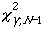
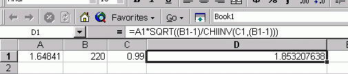

7.2. Comparisons based on data from one process
7.2.5. What intervals contain a fixed percentage of the population values?
7.2.5.4. |
Two-sided tolerance intervals using EXCEL |
where r is defined by:
and

is the critical value of the
chi-square distribution with N - 1 degrees of freedom that is
exceeded with probability,
 .
.
= 0.99.
The EXCEL commands for this calculation are shown below. The calculations are approximate and depend on the starting value for r, which is taken to be zero in this example. Calculations should be correct to three signficant digits.
- Enter 0 in cell A1
- Enter 220 (the sample size) in cell B1
- Enter in cell C1 the formula:
- Enter C1 (if it is not already there) in the cell in the row labeled: "Set cell:"
- Enter 0.9 (which is p) in the cell at the row labelled: "To value:"
- Enter A1 in the cell at the row labeled: "By changing cell:"
Click OK. The screen below will be displayed:
- The value r = 1.6484 appears in cell A1
- The value N = 220 is in cell B1
- Enter which
is 0.99 in cell C1
- Enter the formula =A1*SQRT((B1-1)/CHIINV(C1,(B1-1))) in cell D1
- Press Enter

The resulting value k2= 1.853 appears in cell D1.
. Initialize let r = 0 let n = 220 let c1 = 1/sqrt(n) . Compute R let function f = norcdf(c+r) - norcdf(c-r) - 0.9 let z = roots f wrt r for r = -4 4 let r = z(1) . Compute K2 let c2 = (n-1) let k2 = r*sqrt(c2/chsppf(0.01,c2)) . Print results print "R = ^r" print "K2 = ^k2"Dataplot generates the following output.
R = 1.644854 K2 = 1.849208